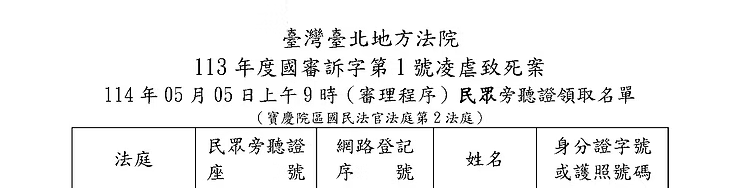

SENTENCING EVIDENCE · DAY 8
監所關注小組原始紀錄護童行動聯盟重製導讀
第八次審判期日
剴剴案國民法官庭審紀錄｜2025年5月5日（一）
科刑不是把傷害變成公式，而是要求每一項主張，都回到資料、責任與復歸可能性。

本頁涉及兒童不當對待、死亡與量刑資料。所有證詞、鑑定說明與檢辯主張均依監所關注小組 DAY8 公開紀錄重製，不等於法院最終認定。原始資料同時出現「嚴O娟」與「顏O娟」，在用字未確認前，本頁統稱「A童外婆」。
第八日庭審速覽
程序主軸由犯罪事實調查轉入科刑資料調查。上午先聽取 A童外婆證詞，下午由徐堅棋醫師解說量刑鑑定，再接受檢辯與審判長詰問。
今天法庭要回答的，不只是哪一方說了什麼
它還要區分：哪些屬於犯罪情狀與責任刑、哪些是被告生活狀況與品行資料、哪些犯後態度或修復因素可以依法進入科刑評價，以及「有社會復歸可能性」是否等於責任可以下修。
09:37 到 16:38｜程序如何推進
- 續行審理
審判長說明科刑爭點與證據調查程序；檢辯進行科刑開審陳述。
- A童外婆作證
照顧、出養決定、孩子交接前狀態、事發後接觸、和解與附帶民事界線。
- 上午休庭
審判長提醒證人詰問時間安排。
- 徐堅棋醫師鑑定解說
鑑定目的、資料來源、兩名被告背景、心理衡鑑、風險與復歸可能性。
- 轉為證人具結並接受詰問
依親自見聞回答兩方辯護人、檢察官的問題。
- 休庭後審判長詢問
確認鑑定經驗與「外控機制」的白話意義。
科刑三階段｜先把責任與個人資料分開
以下依原始紀錄中的檢辯陳述與審判長提醒整理。這是閱讀架構，不是本頁自創的判決公式。
犯罪情狀與責任刑
行為角色、所生危險或損害、被害人家屬態度，以及犯罪事實本身可以承擔到何種責任上限。
不能把後續復歸可能性倒灌成犯罪事實。一般情狀與個人資料
生活狀況、品行、智識程度，以及這些因素與本案犯行之間是否具有可評價的關連。
有背景資料，不等於當然減輕責任。犯後態度、修復與復歸
治療動機、社會支持、再犯風險、矯治可能性、被害人修復與其他依法得考量的因素。
可以復歸，不等於前兩階段必須下修。A童外婆證詞｜照顧、出養與修復界線
原始頁標題與問答表對姓名用字不一致，因此此處只使用身分稱謂。
外婆稱曾實際照顧 A童約兩個月；因孩子母親無法照顧，經社會局建議及兒福聯盟轉介，走向出養程序。
她形容孩子當時健康、活潑、調皮、可愛；談及孩子時開始哭泣。
兩名被告未找她；兒福聯盟曾聯繫一次，她拒絕。被告家人曾談賠償、和解，她表示不願意。
對是否提起附帶民事，她稱不清楚；訴訟參與代理人當庭表示目前沒有。
「我真的很自責，我真的無能為力，不應該對這麼小的小孩做出這麼可怕的事。」— 監所關注小組 DAY8 公開紀錄所載證詞
外婆與其他證人｜逐項回到原問答勾稽
點選任一來源標籤，可直接開啟 DAY8 對應問答或其他庭期完整證詞；DAY8 問答卡也設有返回本表的反向連結。
勾稽主題DAY8 定點其他證人／庭期勾稽判讀
交接前健康與發展
Q06・PDF P.2｜探視頻率Q07・PDF P.3｜周保母照顧Q12・PDF P.3｜交接前印象
相互一致外婆、周○與蕭○香均描述各自照顧或探視期間未見特殊照顧困難；只能建立早期基準，不能直接推定後期每天狀態。
出養與照顧轉換
Q02・PDF P.2｜交給蕭保母Q03・PDF P.2｜出養流程Q08・PDF P.3｜出養原因Q11・PDF P.3｜更換保母
流程互補三人分別說明家庭決定、轉介與實際交接；可拼接程序節點，但家庭動機、社工決策與契約文件仍是不同證據。
事發後接觸與修復
Q15・PDF P.3｜被告與兒盟聯繫Q17・PDF P.3｜賠償與和解Q19・PDF P.3｜附帶民事
目前其他日公開證詞沒有與外婆相同範圍的完整回答；須另核對律師聯繫、訴訟參與及程序文件。
不能補寫聯繫、道歉、和解、賠償與附帶民事必須分開判讀；缺少同範圍來源時，不以推測填補。
兩名被告量刑鑑定｜相同結論，不同風險路徑
下列均是徐堅棋醫師在原始紀錄中的鑑定解說與回答，不是本頁自行診斷，也不等於法院已採納全部意見。
- 責任下修
- 鑑定人稱未發現生活狀況、品行或智識程度足以減輕責任評價的理由。
- 精神疾病資訊
- 對長期幻聽及精神分裂症自述，稱欠缺客觀資料支持，且陳述時間與功能表現需核對。
- 風險
- 鑑定將犯行描述為持續，而非單一偶發；可見未來仍有風險。
- 復歸
- 仍有改變與社會復歸可能，但前提包括治療動機、個別化處遇及隔離／外控因素。
- 責任下修
- 鑑定人同樣稱生活狀況、品行與智識程度沒有下修空間。
- 心理特徵
- 紀錄提及負面情緒、淡化症狀、壓抑控制、缺乏自我覺察、認知扭曲與道德疏離。
- 風險
- 多數情境可遵守規範，但可能容易受到重要他者影響。
- 復歸
- 若移除與劉彩萱關係所形成的影響因素，鑑定人稱較有機會復歸社會。
最重要的分界
「沒有減輕責任評價的理由」與「仍有社會復歸可能性」可以同時成立；前者回答量刑因子是否下修，後者回答未來是否可能改變，不能互相取代。
徐堅棋醫師與其他醫師｜事實底盤、量刑評價與專業界線
以下不是把四位醫師的意見混成一份鑑定，而是逐題標出：何處能銜接、何處只能互補、何處不能互證。
勾稽主題徐醫師 DAY8 定點其他醫師／證人來源勾稽判讀
「自傷」能否解釋孩子狀態
Q28・PDF P.7｜孩子行為難確認Q46・PDF P.7｜非一時衝動
DAY3｜周○未見自傷DAY5｜呂立・42處傷勢DAY6｜丘彥南・精神鑑別
多源收束早期照顧者未見自傷、傷勢醫學不支持單一自傷概括、精神鑑別要求放回長期脈絡；徐醫師則在量刑階段保留孩子行為真實性的限制。
身體與死亡證據如何進入責任評價
Q46・PDF P.7｜責任不下修理由Q58・PDF P.8｜生活品行智識
DAY5｜許倬憲・死亡機轉DAY5｜呂立・傷勢脈絡DAY6｜三層證據鏈
層級相接許、呂、丘三位醫師建立孩子身體、死亡與精神影響的事實底盤；徐醫師回答被告個人量刑因子。前者不能自動推出刑度，後者也不能改寫傷勢與死因。
被告精神自述與治療動機
Q44・PDF P.7｜精神狀態自述Q48・PDF P.7｜治療動機Q50・PDF P.7｜疏遠治療
許倬憲、呂立與丘彥南的公開證詞主要評估被害兒童，不是兩名被告的精神診斷或治療。
不可互證不能拿被害兒童的法醫、兒少醫療或精神鑑定，替代徐醫師對被告的量刑鑑定；診斷對象與待答問題不同。
風險、復歸與外控條件
Q51・PDF P.7｜隔離因子Q59・PDF P.8｜較高復歸可能Q61・PDF P.8｜外控機制
其他三位醫師沒有針對兩名被告提出再犯風險或社會復歸意見。
DAY8 專屬復歸可能性只回答未來處遇條件；不能倒推犯罪事實較輕，也不能抵銷前階段的責任評價。
跨日連結均指向本站已公開的原問答或證據鏈；所有勾稽結論是閱讀索引，不等於法院採信或最終認定。
心理鑑定名詞｜只解釋本日原文怎麼用
淡化症狀
鑑定人以白話說明：受測者在自填量表時可能輕描淡寫，醫師看到這種情況會另外提出；並不等於所有回答都不可信。
道德疏離
一種心理機制：透過不同認知，使自己不會因自己或他人的不道德行為感到自責。
外控機制
來自環境的控制因素。鑑定人舉例，家長會來接孩子就是外控；封閉環境則可能減少外部介入。
4P × 生物心理社會模型
把前置、誘發、持續、保護因素，與生物、心理、社會面向交叉整理，用來辨認風險與保護條件。
風險—需求—應對模型
原始紀錄列出取消教保員資格、宗教及家人支持等因素，用來討論未來風險、處遇需求與支持條件。
復歸可能性
指未來經處遇後回到社會生活的可能，不等於本案責任已減輕，也不代表風險已消失。
完整詰問｜左問右答重製
桌機採雙欄，手機自動改為「問題→回答」。換行依原 PDF 表格保留；唯一未記載鑑定人回答的提示列，明確標為空白，不以後續程序說明回填。
顯示 61 組問答
有沒有實際照顧過A童？
有，大概2個月
為什麼交給蕭保母？
要交給兒福聯盟出養
出養的流程？
因為媽媽沒有辦法照顧，社會局建議，後轉介給兒福聯盟
為何妳是監護人？
媽媽聯絡不上。必須有監護人，所以改成我
周保母呢？
照顧過姐姐，同父異母的姐姐
有沒有去看過A童？
有，一個月2次以上
周保母照顧得如何？
照顧得很好，很健康、很活潑、很調皮、很可愛
為何決定出養？
因為我們無能為力，媽媽沒辦法照顧。我和先生一個月收入5、6萬元，自己還有未成年子女，還有
A童姐姐的保母費等
妳要上班嗎？
要，每天早上8點到晚上7點
認識劉彩萱嗎？
兒福聯盟交接A童時有接觸，和一般一樣，沒什麼特別的。沒有去探望過，會捨不得，要出養了。
從社工處有得知A童的情形
為何要從周保母換成劉保母？
因為要有和兒福聯盟配合的保母
對A童當時的印象？
很健康，弟弟很可愛，我很難過（開始哭泣）
A童死後的感覺？
我真的很自責，我真的無能為力，不應該對這麼小的小孩做出這麼可怕的事
有來旁聽幾次為什麼都先離開？
真的太痛，1歲多的小孩，沒有權力這樣對待一個孩子
事發後被告和兒福聯盟有找過妳嗎？
兩位被告沒有，兒福聯盟找過我一次，我拒絕了
何時？
時間太久我不記得了，是傳簡訊來，說想跟我聯繫
被告或被告的家人有找妳談賠償、和解嗎？
有，但我不願意
過程是怎麼樣？
他們是透過律師跟妳講的嗎？
是
是要提附帶民事訴訟嗎？
不是很清楚
有無受到疏離、對抗人格的影響？
與先生多採冷戰，有次提到情緒低落打破玻璃自傷，但沒有就醫等也沒告訴別人
劉若琳兒子說，姨媽媽生氣時會不講話
工作中呢？
沒聽說
無前科、無反社會人格紀錄，為何會犯下大罪？
這也是我很好奇的
因為還有法律問題，無法真正看穿
等定讞後再訪談可能比較有機會瞭解
環境因素對事件的影響？
經濟來源、封閉環境無法介入，另外一個孩子照顧是沒問題的
是多重因素下的行為？
是
夫妻關係冷淡還是人格特質？
人格特質是更早之前，表現在婚姻關係上
為何會形成「對抗」的人格特質？
劉彩萱現在面對法律上的問題，指幻聽、家庭因素等都意在降低可責性
能否分辨因素的輕重？
都加在一起造成，個人是最重要的影響
在何契機下有可能改變？
A童是否真有這些行為難以確定
審理過程中會有各種策略，治療要先有動機，目前會有減低可責性的考慮，要等
定讞後，才有可能
有沒有什麼方式或量表可以評估？
長期治療的關係裡可以，但沒有什麼一定的量表
感知差，有否可能改變？
以前沒發生過，所以有可能改變
長期需要多久的時間？
沒辦法回答，頻率、時間、強度、自己改變的動機都會有差別
在監所要接受什麼治療？
我對監所的資源瞭解有限，個別化處遇對他是有利的
明尼蘇達量表（多相人格測驗，MMPI），淡化症狀的可能性
壓抑、高情感、身體化的方式來表現（身心化主述）
控制需求等是什麼意思？
例如照顧繼子、婆家事業，把自己的小孩送回娘家等
易順從、照別人的意思？
覺得重要的人，需要得到的肯定
在這事件可以說是劉彩萱嗎？
這是我們看到的困難複雜的部分，劉若琳曾經是雇主，可以強勢，離婚後又有變
化
什麼是「淡化」症狀？
自填量表時會輕描淡寫，醫生看到這狀況時會提出來
鑑定報告頁57，從劉若琳離婚後回家的變化？
有落差，做生意和回家不太一樣，變得沒有那麼強勢，不同時間和情境下會不同
鑑定報告頁48和簡報，用3個理論歸納出五個可能性（原因）：社會學習理論、威權服從理論、認知協調理論，來分析劉若琳對劉彩萱的行為認識和回應
回答欄空白。
審判長指出鑑定報告未列入，請以簡報為主；本列未記載鑑定人回答。劉彩萱稱父親有外遇、不和睦的陳述是否都和其他家人不一樣？
是，姊妹說法不同，陳述會比較可疑
劉彩萱有無特殊事件？
目睹父親家暴母親，母親較嚴厲，沒有被針對，家庭經濟填「小康」，但描述便
當比較差；房客有租金可以先欠著，長大過程陳述部分有所懷疑
經濟狀況對本案的影響？
子女已成年不用更花錢，107年後父親也有改變會拿潛回來，兒盟1人3萬、家長2
萬多，房租是有錢再給（房子是大姊的），不是她人生最差的時候
王先生說劉彩萱有過度參與宮廟？
健康問題會花錢去處理，10萬元以上
劉彩萱的精神狀態呢？
訪談第一、二次未提，第三次才開始自己說有聽幻覺，和診斷上的表現差很多，
思覺失調的功能會很差，旁人也一定會覺察
持續性憂鬱症若大於兩年，行為表現會不一樣，所以認為不是
說沒有錢看醫生，但是有替子女投保、繳保費，亦是不一致的資訊
劉彩萱糖尿病與本案行為有無關係？
兒子說會比較疲倦，劉彩萱控制在5點多，一般來說6.0~6.5、6.5以上會比較需要
注意
飯前血糖是是120cc（建議是99）
貧血在萬芳的病歷裡也沒有
醫師鑑定認為都不影響劉彩萱的刑期下修，為何做此判斷？
非一時衝動失控，而是長時間針對一個無法求救的孩子，她是有能力照顧自己小
孩和受托育的小孩，所以沒有下修的可能性
劉彩萱在看守所內有傷害自己的行為嗎？
有提到咬自己，但沒有看到傷
劉彩萱社會復歸的可能性呢？
要有治療的動機
劉彩萱有承認自己有錯誤的行為？
肚子大大的不覺得體重有降低，很快穿衣服所以沒有看到傷
疏遠治療是什麼意思？
不是特別的心理治療的名詞，指的是比較不願意、沒有動機，排斥當然會影響治
療
劉彩萱的社會復歸？
的確還是會有風險，如果沒有隔離因子的話
劉若琳的部分，她有異於一般人的創傷經驗？
沒有，大解說小時候長得很像混血兒，備受疼愛
劉若琳和劉彩萱的關係，是劉若琳的表述嗎？
是
看過對話紀錄嗎？
有看過，也有問，講法就是開玩笑，若不想看就點掉（不是在針對事實行為）
淡化的症狀會影響如智力測驗嗎？
有參酌其他的（如學歷等），所以智力測驗是可信的
個性會否妨礙劉若琳做心理治療？
是。目前可能先紓壓
用白話講「道德疏離」是什麼？
是一種心理機制，透過不同的認知，讓自己不會因為自己或他人的不道德行為感
到自責
鑑定結果是否是第4、5、6款生活狀況、品行、智識程度，都沒有下修空間？
沒錯，沒有不利的發展因素
順從、退讓、符合整體個心理衡鑑的結論。有較高復歸可能性？
前提是劉彩萱開始，劉若琳後來才加入，若除去這個因素，就較有機會復歸社會
請問徐醫師有幾件鑑定的經驗？
四件，兩件量刑
外控機制是什麼意思？
環境因素，封閉環境似有影響，但和另外一個孩子又沒這現象，家長就是「外
控」因素，因為家長會來接
沒有符合條件的問答。
監所關注小組提供的原始圖片
下圖由監所關注小組公開資料提供，原載於 DAY8 PDF 第1頁，內容為法院、案號、日期及民眾旁聽證領取名單表頭。本站保留來源脈絡，不將其作為案件事實的獨立證物。

來源、版本與證據界線
監所關注小組〈DAY8｜2025年5月5日（一）第八次審判期日〉及其8頁PDF列印檔。
查看原始網頁 ↗PDF共8頁、431,584位元組；SHA-256：760a8993d514fa88ec3f55a6b988ef1c2dfc71ce8934c382027187cdb190af5d。原始 PDF 與逐頁文字層保留於專案來源，不在本頁嵌入或提供展開閱讀。
原始資料同時出現「嚴O娟」與「顏O娟」。本頁不自行裁定正字，敘事一律使用「A童外婆」，典藏文字層保留原件。
證詞是證人陳述；鑑定是專業意見；檢辯陳述是主張；本頁導讀是編輯整理。四者都不能直接替代法院判決。